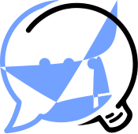

Ressources Tock
Les différents supports et présentations ci-dessous donnent un aperçu de la solution Tock, en complément des guides pour tester soi-même la plateforme.
Conférences / Video
- Gen AI with TOCK @ WAX 2024 (RAG et LLM Open Source ? Vers des IA Génératives plus responsables.) ℹ️ info 📽️ 45 min
- 20 minutes from zero to live chatbot with Tock
@ Open Source Experience 2021 (démonstration, en Anglais) ℹ️ info / 📽️ 20 min

- AlloCovid @ Voice Tech Paris 2020 (REX INSERM, Allo-Media & SNCF) ℹ️ info

- Tock & Mélusine @ AI Paris 2020 (REX SNCF & MAIF) ℹ️ info / 🔳 slides

- Conversationnel & Open Source @ Paris Open Source Summit 2019
(REX SNCF & invités EDF, Enedis, Orange, SogetiLabs, TOSIT) 📽️ 30 min / 🔳 slides

- Développer un bot sur Messenger et Google Assistant en 30 minutes
@ Devoxx France 2018 (live coding "tools in action") 📽️ 30 min

Meetup / Supports
- Présentation de Tock (avec SNCF & Enedis) @ Innovation Makers Alliance (2021) ℹ️ info

- Tock - The Open Conversation Kit @ Meetup Open Transport (2019) 🔳 slides

- Tock - The Open Conversation Kit @ CRiP OpenSource & Co-développement (2017) 🔳 slides

N'hésitez pas à partager d'autres supports et liens autour de Tock.
Kit presse
Comme le reste des sources Tock, les logos sont disponibles sous licence Apache 2.
Logo Tock - couleurs par défaut / transparent (télécharger) :
{kind=link}

Logo Tock - bleu / transparent (télécharger) :
{kind=link}

Logo Tock - noir / transparent (télécharger) :
{kind=link}

Logo Tock - blanc / transparent (télécharger) :
{kind=link}